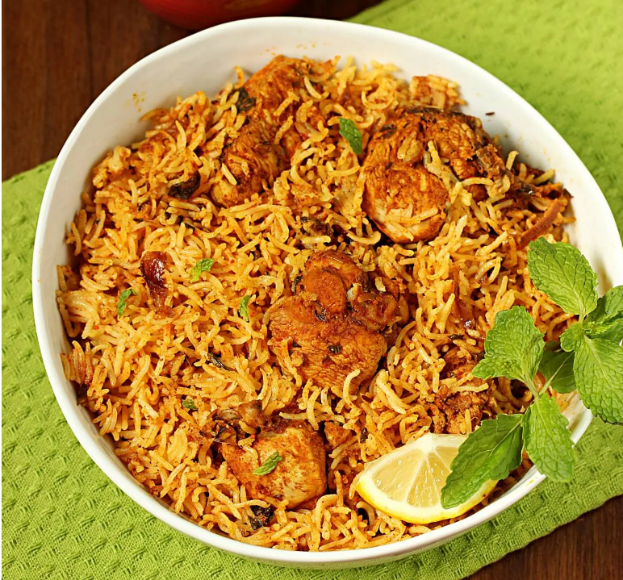

Chicken Biryani
Welcome to the Chicken Biryani recipe page! Here, you'll find a delightful recipe that will make your taste buds
dance with joy.

Introducing our treasured family recipe for authentic Chicken Dum Biryani! Aromatic long-grain
rice, perfectly
layered over succulent chicken marinated in a blend of earthy, aromatic spices, garnished with caramelized
onions and delicate strands of saffron. Each bite bursts with the vibrant flavors of India.
Ingredients for chicken dum biryani!
- 1 kg chicken, cut into pieces
- 500 g basmati rice
- 2 large onions, thinly sliced
- 4 tomatoes, chopped
- 1 cup yogurt
- 4 green chilies, slit
- 1 tablespoon ginger-garlic paste
- Whole spices (bay leaves, cardamom, cloves, cinnamon)
- 1 teaspoon turmeric powder
- 1 tablespoon red chili powder
- 1 teaspoon garam masala
- Fresh coriander and mint leaves, chopped
- Saffron strands soaked in warm milk (optional)
- Salt to taste
- Oil or ghee for cooking
Instructions to make chicken dum biryani!
- Wash and soak the basmati rice in water for 30 minutes, then drain.
- In a large pot, heat oil or ghee and fry the sliced onions until golden brown. Remove half for garnishing.
- Add the remaining onions to the pot, then add ginger-garlic paste and green chilies. Sauté until fragrant.
- Add the chopped tomatoes, turmeric powder, red chili powder, and salt. Cook until the tomatoes soften.
- Add the chicken pieces and cook until they are browned and cooked through.
- Stir in the yogurt, garam masala, and half of the chopped coriander and mint leaves. Cook for a few more
minutes.
- Layer the soaked and drained rice over the chicken mixture. Sprinkle the remaining coriander and mint
leaves,
fried onions, and saffron milk (if using) on top.
- Cover the pot with a tight-fitting lid, sealing it with dough if desired, and cook on low heat for about
30-40
minutes to allow the flavors to meld and the rice to cook through.
- Once done, gently fluff the biryani with a fork, mixing the layers slightly.
- Serve hot with raita or salad on the side.
Enjoy your homemade Chicken Dum Biryani, a dish that brings warmth and joy to every meal!
Enjoy your meal!
We hope you enjoy making and savoring this delicious Chicken Dum Biryani. It's a dish that not only fills your
stomach but also warms your heart. Happy cooking and bon appétit!
More Recipes
Check out our Rogan Josh recipe for another delightful dish that will tantalize
your taste buds!
For more recipes, visit our home page.
Thank you for visiting our recipe page. We hope you find joy in cooking and sharing these delicious meals with
your loved ones!